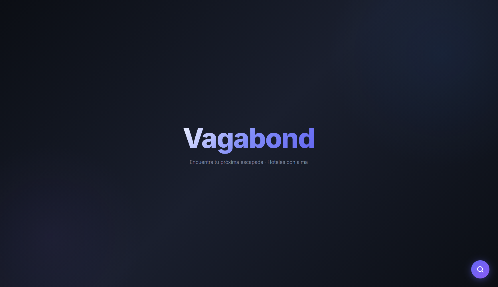
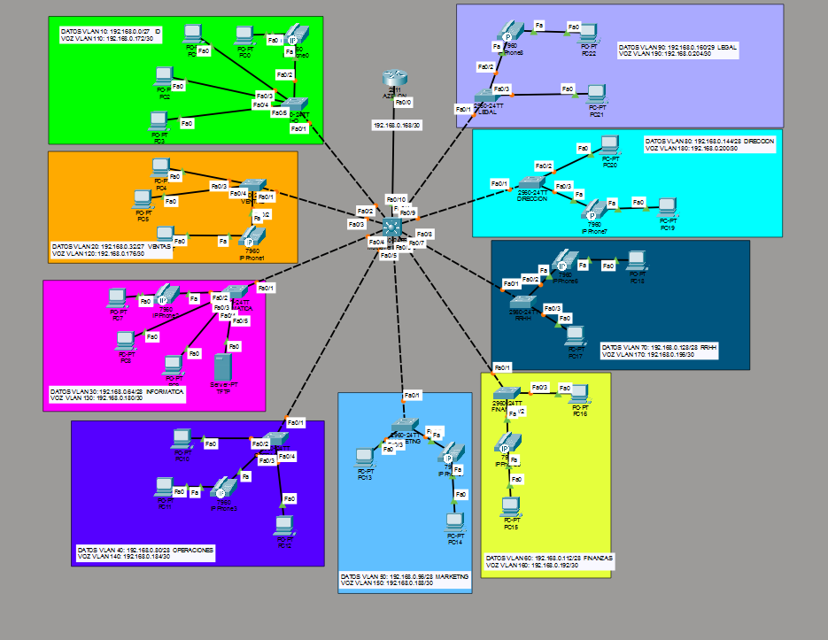
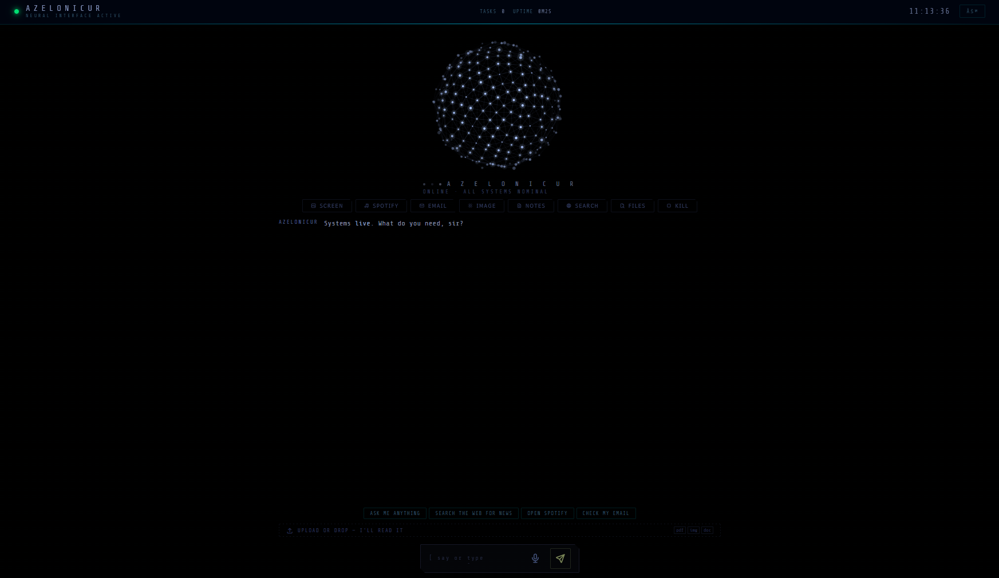

isang portfolio ni
Matthew Macalintal
Tungkol
estudyante sa araw,
builder sa gabi.
“Bawat proyekto ay pagkakataong matuto ng bago — mula sa pag-configure ng router hanggang sa pagbuo ng isang AI assistant.”
Isa akong programming student na kasalukuyang nag-aaral ng ASIR — Systems Administration sa DIGITECH Madrid. Mahilig ako sa programming at sa paggawa ng mga bagay para sa web, at palagi akong naghahanap ng susunod na skill na magpapagaling pa sa akin dito.
Pinagsasama ko ang teknikal na katumpakan at malikhaing paglutas ng problema. Ginagamit ko rin ang mga AI tool para mas mabilis matuto — mabilis kumilos, laging updated, at talagang inuunawa ang mga bagay sa halip na kumopya lang ng sagot.
Kapag wala sa keyboard: video games, pelikula, design, photography, at kung anumang bagong teknolohiya ang susunod na lalabas.
Kasanayan
ang laman ng
toolbox ko.
Mga proyekto
kasama ang buong source —
i-download at tuklasin.
Database & Backend
→Nginx reverse proxy sa harap ng mga Python Flask at FastAPI service, na may MySQL sa likod — mga REST endpoint, service config, at deployment layout.
Network Design
→Enterprise-style na network sa Cisco Packet Tracer — VLAN segmentation, inter-VLAN routing, at buong router at switch configuration mula sa simula.
Azelonicur AI
→Multi-agent AI assistant na nagpapatakbo ng mga local model gamit ang Ollama sa likod ng FastAPI backend — chat, tools at orchestration, buong self-hosted.
Malapit na
ang darkroom — hilahin ang mga print, ihagis-hagis mo.
may kasamang physics


Edukasyon
tatlong taon na
sa IT.
ASIR — Systems Administration
Higher-level vocational training sa network systems administration. Nasa unang taon ngayon — servers, networks, databases at services.
SMR — Microcomputer Systems & Networks
Natapos ang dalawang taon — hardware, operating systems, local networks at mga batayan ng web application.
Secondary Education
Sapilitang sekundaryang edukasyon (4º de la ESO), Madrid, Spain.
Kontak
bukas ang
inbox.
tayo.